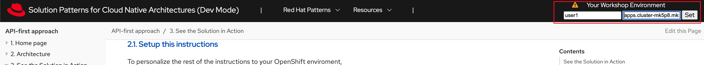

Solution Pattern: Recommendation Engine using Event Streaming See the Solution in Action 1. Setup the Solution To provision the demo you will perform the following steps - each of which are explained in detail in the next sections: Gain access to Red Hat OpenShift. This solution pattern has been tested on OpenShift 4.13 Ensure you have the tools oc and ansible installed in your local environment such as your laptop Access the OpenShift cluster with cluster-admin privileges Log in to OpenShift with cluster-admin role via cli Run the Ansible playbook Run a bunch of scripts to deploy the Solution Pattern in your OpenShift cluster 1.1. Pre-requisites Here is the list of tools you need in your local enviroment so that you can use the automated installation. OpenShift CLI (oc client) Ansible CLI Ansible kubernetes.core module To check if you have the cli tools, you can open your terminal and use following commands: oc version #openshift cli client ansible --version ansible-galaxy --version ansible-galaxy collection list #the list should include kubernetes.core If you can’t see kubernetes.core collection listed, you can install it with ansible-galaxy: ansible-galaxy collection install kubernetes.core 1.2. Installing the demo Login to your OpenShift cluster as cluster-admin (because a number of operators will need to be installed) Click on the username on the top right hand, and then click on Copy login command. This will open another tab and you will need to login again Click on Display token link, and copy the command under Log in with this token. This will look like this oc login --token=<token> --server=<server> Clone the ansible scripts as follows in an appropriate folder in your local environment git clone https://github.com/rh-solution-pattern-event-streaming/ansible Navigate to the ansible folder cd ansible Run the ansible playbook as shown below. This will take a few minutes to complete. Ensure that the ansible playbook is deployed without errors ansible-playbook playbook.yml This is the output you get from the above ansible command: PLAY RECAP PLAY RECAP *********************************************************************************************************************************************************** localhost : ok=59 changed=0 unreachable=0 failed=0 skipped=23 rescued=0 ignored=0 That’s it! You are set to try out this Solution Pattern! ｡◕‿◕｡ 2. Walkthrough guide In the following sections you will follow this journey: Add event streaming to the Globex retail application to track user activity Use Kafka streams to then highlight featured products In this part of the workshop you will connect the Activity Tracking and Recommendation Engine applications to the Apache Kafka broker using Service Binding. You will be using the OpenShift Developer Console to configure the service binding. Note that these steps can also be achieved using the Red Hat OpenShift (oc) CLI. Note: Click to learn more about Service Binding 2.1. Personalize this instructions To personalize the rest of the instructions to your OpenShift enviroment, At the top-right of this page enter username as user1 subdomain to match your OpenShift cluster under the Your Workshop Environment section Press enter or click on the Set button  The menubar and the rest of this walkthrough guide will be updated with the username and subdomain as shown below The subdomain would look something like this apps.cluster-name.guid.subdomain.myopenshift.com 2.2. Explore the environment In a browser window, navigate to the console of the lab OpenShift cluster at console. Login with your username and password (%USERID%/openshift). Open the Developer perspective in the globex-%USERID% namespace. In the Developer perspective, open the Topology view. Expect to see something like this (rearrange the topology as you see fit): The deployed topology consists of: globex-ui: The Globex Coolstuff web application (Node.js/Angular). catalog and catalog-database: The Globex Coolstuff catalog service, consisting of the catalog database and the Spring Boot catalog microservice. inventory and inventory-database: The Globex Coolstuff inventory service, consisting of the inventory database and the Quarkus inventory microservice. activity-tracking: The Activity Tracking service. Notice that the deployment of the service is scaled to zero. The service will be scaled up once the connection to the Kafka broker is set up. recommendation-engine: The Recommendation Engine service. Notice that the deployment of the service is scaled to zero. The service will be scaled up once the connection to the Kafka broker is set up. activity-tracking-simulator: A Quarkus service that simulates user activity events and sends them to the Activity Tracking service. kafka: an instance of a Kafka broker, managed by the AMQ Streams operator. In the Topology view, the kafka deployment shows up as a single unit, but in reality it consists of several deployments: a ZooKeeper (3 nodes) to manage and maintain the internal state of the Kafka broker, the Kafka broker itself (2 broker nodes) and the Entity operator, which manages topics and users. kafdrop: a web UI for viewing Kafka topics and browsing consumer groups. The tool displays information such as brokers, topics, partitions, consumers, and lets you view messages. Open the Globex UI application in a browser tab. To do so, click on the icon next to the blue circle representing the globex-ui deployment in the Topology view. Alternatively, open a browser tab and navigate to globex-ui Expect to see the home page of the Globex Coolstuff web application: Click on Cool Stuff Store in the top menu to see a paginated list of products: The Featured pane on the home page is empty at the moment. Also the product list page has an empty bar above the product list. These elements will be populated once the recommendation engine is up and running. 2.3. Create a Kafka Topic in the AMQ Streams Kafka broker The first thing to do is to create a topic in the Kafka broker which will receive the user activity events generated on the Globex web site. When using AMQ Streams, topics can be created by deploying a Kubernetes Custom Resource (CR), that will be processed by the Entity Operator of AMQ Streams, which will use the Kafka APIs to create the topic on the broker. A custom resource can be created directly in the OpenShift console. On the OpenShift console, click on the icon in the top menu on the right. This opens an editor where you can enter a Kubernetes resource definition in YAML or JSON format. Paste the following KafkaTopic Custom Resource in the editor. apiVersion: kafka.strimzi.io/v1beta2 kind: KafkaTopic metadata: labels: strimzi.io/cluster: kafka name: globex.tracking namespace: globex-%USERID% spec: topicName: globex.tracking partitions: 1 replicas: 2 config: {} Click Create to create the topic. This creates a topic named globex.tracking with a single partition and two replicas, and default configuration (the config element allows you to define additional properties like message retention time and size etc…). The Kafdrop UI can be used to verify that the topic has been correctly created. In the Topology view of the globex-%USERID% namespace, click on the icon next to the blue circle representing the kafdrop deployment. Alternatively, open a browser tab and navigate to kafdrop. This redirects you to the Kafdrop home page. Scroll down to see the list of topics. Expect to see the globex.tracking topics, which you just created. Click on the topic name to see the details of the topic. Notice that the topic has a single partition, and is empty at the moment. 2.4. Binding applications to Apache Kafka In order for applications to be able to connect to a Kafka broker, the application needs to be configured with connection details like the Kafka bootstrap server URL, the security protocol and the user credentials. This is where Service Binding comes in. Service Binding allows to inject connection details from an e.g. secret directly into a pod. Binding applications to services using Service Binding requires the Service Binding operator to be installed on the OpenShift cluster. The operator has been installed on your OpenShift cluster. As part of the provisioning of the Kafka broker, a secret kafka-client-secret was created in the globex-%USERID% namespace. To view the contents of the secret, click on Secrets in the left menu of the Developer perspective. Make sure you are pointing to the globex-%USERID% namespace. In the list of secrets, locate the kafka-client-secret secret, and click on the name of the secret to open the secret details. Click on Reveal values to see the actual values stored in the secret. To bind the Activity Tracking service and Recommendation Engine applications to the Kafka broker, create a ServiceBinding Custom Resource. On the OpenShift console, click on the icon in the top menu on the right. This opens an editor where you can enter a Kubernetes resource definition in YAML or JSON format. Paste the following ServiceBinding Custom Resource in the editor. apiVersion: binding.operators.coreos.com/v1alpha1 kind: ServiceBinding metadata: name: kafka-servicebinding namespace: globex-%USERID% spec: application: group: apps labelSelector: matchLabels: service-binding/type: kafka resource: deployments version: v1 bindAsFiles: true services: - group: '' kind: Secret name: kafka-client-secret version: v1 Click Create to create the Service Binding resource. The Service Binding operator detects the creation of the Custom Resource, looks for deployments which are labeled with service-binding/type: kafka and injects the contents of the kafka-client-secret into the deployments. Both the activity-tracking and the recommendation-engine deployments have the expected label. Once the service binding is done, the status of the ServiceBinding Custom Resource moves to Connected. To check the injection of the secret by the Service Binding operator, navigate to the Topology view of the OpenShift console at OpenShift Console. Click on the activity-tracking deployment to open the details pane, and click on the deployment name (above the Details, Resources and Observe tabs) to open the full details of the Deployment. Scroll down to the Volumes section. Notice that the service binding occurs by injecting a secret into the pod: Return to the Topology view. Scale the activity-tracking deployment to 1 replica. You can do so by clicking on the activity-tracking deployment in the Topology view, and in the details window select the Details tab, and click the arrow next to the circle to scale the deployment. Check the logs of the activity-tracking pod, and notice that the pod successfully connects to the Kafka broker instance. To see the logs, click the Resources tab of the deployment, and click on the View logs link. Expect to see something like: [...] 2023-06-13 10:00:31,873 INFO [io.sma.rea.mes.kafka] (main) SRMSG18258: Kafka producer kafka-producer-tracking-event, connected to Kafka brokers 'kafka-kafka-bootstrap.globex-user1.svc.cluster.local:9092', is configured to write records to 'globex.tracking' 2023-06-13 10:00:33,968 INFO [io.quarkus] (main) activity-tracking-service 1.0.0-SNAPSHOT on JVM (powered by Quarkus 2.7.4.Final) started in 13.993s. Listening on: http://0.0.0.0:8080 2023-06-13 10:00:33,969 INFO [io.quarkus] (main) Profile prod activated. 2023-06-13 10:00:33,969 INFO [io.quarkus] (main) Installed features: [cdi, kafka-client, resteasy-reactive, smallrye-context-propagation, smallrye-health, smallrye-reactive-messaging, smallrye-reactive-messaging-kafka, vertx] Go back to the Topology view, and scale up the recommendation-engine deployment to 1 pod. Once the recommendation-engine is up and running, check in the Kafdrop UI at kafdrop that a number of new topics have been created: Those are the topics created by the Kafka Streams topology in the Recommendation Engine to calculate the top featured products based on activity events. 2.5. Testing the Globex Coolstuff application Now that the Activity Tracking and Recommendation Engine apps are up and running, we can test the generation of activity events and the calculation of the top featured products. The deployment topology for the workshop includes an activity simulator service which will generate a number of activity events randomly distributed over a list of products. These activity events are sent to the Activity Tracking service and transformed into Kafka messages in the globex.tracking topic. These messages are consumed by the Recommendation Engine app to calculate the top featured products. In a browser window, navigate to the Topology view of the lab’s OpenShift cluster at OpenShift Console. Open the URL to the activity-tracking-simulator application by clicking the icon next to the blue circle representing the activity-tracking-simulator deployment. Alternatively, open a browser tab and navigate to Activity Tracking Simulator. This opens a Swagger UI page which allows you to use the REST API of the application. The REST application has only one operation, POST /simulate. Generate a number of activity events. Click the Try it out button, and set count to any value between 100 and 1000. Click Execute. You can use the Kafdrop UI to inspect the messages sent to the globex.tracking topic of the Kafka broker. Navigate to the Kafdrop UI at kafdrop and click on the globex-tracking topic in the topic list. Notice the activity event messages produced by the Activity Tracking service: Click on the link of the only partition of this topic to see the list of messages. Click on the icon next to a message to see its content. The featured product list calculated by the Recommendation Engine is produced to the globex.recommendation-product-score-aggregated-changelog topic. The list is recalculated roughly every 10 seconds as long as activity events are produced. Every calculation produces a message to the changelog topic. The last message in the topic represents the latest top featured list. In a browser window, navigate to the home page of the Globex Coolstuff web application. Notice that the home page now shows a list of featured products. Also, the product page now shows a banner with the featured products. Congratulations! You reached the end of this part of the workshop, in which you added event streaming capabilities to the Globex Coolstuff application, using AMQ Streams, and Service Binding to connect your apps to the Kafka instance. 3. Appendix 3.1. Learn more about Service Binding Service Binding allows you to communicate connection details and secrets to an application to allow it to bind to a service. In this context, a service can be anything: a Kafka instance, a NoSQL database, etc. By using Service Binding, we no longer need to configure connection details (host, port), authentication mechanisms (SASL, OAuth) and credentials (username/password, client id/client secret) in an application. Instead, Service Binding injects these variables into your application container (as files or environment variables) for your application to consume. The Quarkus Kubernetes Service Binding extension enables Quarkus applications to automatically pickup these variables, injected as files, from the container’s filesystem, removing the need to specify any configuration settings in the application resources (e.g configuration files) themselves. Read more about Service Binding For Kubernetes . << back to instructions 3.2. Learn more the Kafka topic configuration parameters Partitions are distinct lists of messages within a topic and enable parts of a topic to be distributed over multiple brokers in the cluster. A topic can contain one or more partitions, enabling producer and consumer loads to be scaled. Replicas are copies of partitions in a topic. Partition replicas are distributed over multiple brokers in the cluster to ensure topic availability if a broker fails. When a follower replica is in sync with a partition leader, the follower replica can become the new partition leader if needed. Message retention time is the amount of time that messages are retained in a topic before they are deleted or compacted, depending on the cleanup policy. Retention size is the maximum total size of all log segments in a partition before they are deleted or compacted. For this workshop you can keep the default values. 2. Architecture